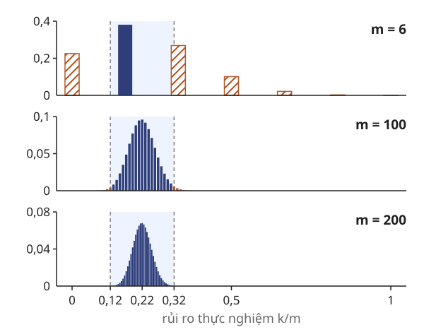
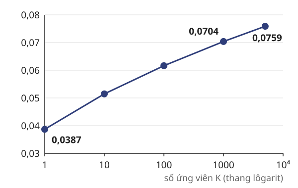

Bất đẳng thức tập trung và độ phức tạp mẫu của lớp hữu hạn
Bài 02
Quan sát độc lập, hàm lỗi bị chặn, lớp hữu hạn chọn trước: mọi rủi ro thực nghiệm gần rủi ro kì vọng với xác suất cao; cỡ mẫu tăng theo lôgarit số giả thuyết.
Lý thuyết học thống kê · Năm học 2026–2027, học kỳ 1
Khoa Công nghệ thông tin, Trường Đại học Công nghệ, ĐHQGHN
Tiên quyết và quy ước
Nhắc lại: $\mathbb E_S[L_S(h)]=L_D(h)$ khi $h$ chọn trước khi lấy mẫu (Mệnh đề 01.7).
Tối thiểu hóa rủi ro thực nghiệm (empirical risk minimization, ERM).
Học xấp xỉ với xác suất cao (probably approximately correct, PAC).
Nhắc lại: $(D,\mathcal H)$ khả diễn nếu có $h^\star\in\mathcal H$ với $L_D(h^\star)=0$; học PAC khả diễn, bất khả diễn.
Kí hiệu: $K=\lvert\mathcal H\rvert$; $\delta$ xác suất thất bại; $\ln$ lôgarit tự nhiên.
Mục tiêu
Chứng minh bất đẳng thức Markov, Chebyshev, Hoeffding.
So sánh xác suất đuôi với các cận; dựng cận tin cậy.
Chứng minh hội tụ đều trên lớp hữu hạn; suy ra bảo đảm cho ERM.
Tính cỡ mẫu đủ: ước lượng, rủi ro vượt mức nhỏ, học khi khả diễn.
Giải thích hai tốc độ của cỡ mẫu theo độ chính xác.
Dựng phản ví dụ khi bỏ tính độc lập, tính bị chặn hoặc hệ số đếm ứng viên.
Phân bố có nhiễu $D_\eta$: $\eta(x)=\Pr(Y=1\mid X=x)=0;\ \tfrac14;\ \tfrac34;\ \tfrac25;\ 1$ tại $x=1,\ldots,5$.
$t$
$1$
$2$
$3$
$4$
$5$
$6$
$L_{D_\eta}(h_t)$
$0{,}52$
$0{,}32$
$\mathbf{0{,}22}$
$0{,}32$
$0{,}28$
$0{,}48$
Với hàm lỗi 0–1 (0–1 loss), $\ell_{0\text{-}1}(h_3,Z)$ có phân bố Bernoulli (Bernoulli distribution) $\mathrm{Bernoulli}(0{,}22)$; theo (T1), $mL_S(h_3)$ có phân bố nhị thức (binomial distribution) $\mathrm{Bin}(m;0{,}22)$.
Nhắc lại: $S_\eta=((1,0),(2,0),(2,1),$ $(3,1),(4,0),(5,1))$ cho $L_{S_\eta}(h_3)=\tfrac13$.
Xác suất đuôi của rủi ro thực nghiệm

Trực quan. Khi $m$ tăng, $L_S(h_3)$ dồn vào dải $(0{,}12;\ 0{,}32)$ quanh $0{,}22$.
Xác suất đuôi (tail probability) hai phía $\Pr(\lvert V-\mathbb EV\rvert\ge\epsilon)$; đuôi trên, dưới: $\Pr(\pm(V-\mathbb EV)\ge\epsilon)$.
$L_S(h_3)$, $\epsilon=0{,}1$, dưới $D_\eta$: $m=6$: $0{,}6189$; $m=100$: $0{,}0211$; $m=200$: $8{,}9\cdot10^{-4}$.
Cận đuôi (tail bound): một cận trên của xác suất đuôi, tính được khi chưa biết $D$.
Bất đẳng thức Markov và Chebyshev
Trực quan. Phần $\{V\ge\alpha\}$ đóng góp ít nhất $\alpha\Pr(V\ge\alpha)$ vào $\mathbb EV$.
Đưa về kì vọng $0$: $W=V-\mathbb EV\in[a',b']$, $a'\le0\le b'$, $b'-a'=b-a$.
Dây cung (chord) của $e^{\tau w}$ trên $[a',b']$ (giả thiết bị chặn); lấy kì vọng, dùng $\mathbb EW=0$: $\mathbb Ee^{\tau W}\le e^{\varphi(u)}$, với $u=\tau(b-a)$, $\varphi(u)=-\theta u+\ln(1-\theta+\theta e^u)$, $\theta=-a'/(b-a)$.
$\varphi(0)=\varphi'(0)=0$; $\varphi''$ là phương sai Bernoulli, nên $\varphi''\le\tfrac14$.
Taylor tại $0$: $\varphi(u)\le u^2/8$.
Kỹ thuật. Dây cung cho hàm lồi, rồi khai triển Taylor bậc hai tại $0$.
Bỏ tính bị chặn: hàm sinh mô-men có thể bằng $\infty$.
Bất đẳng thức Hoeffding
Trực quan. Cận chỉ dùng độ dài $b-a$, nên đúng cho mọi phân bố trên $[a,b]$.
Định lý 02.7 (bất đẳng thức Hoeffding, Hoeffding's inequality). Giả thiết: $V_1,\ldots,V_m$ độc lập, không cần cùng phân bố; $a\le V_i\le b$ hầu chắc chắn, $a<b$; $\epsilon>0$.
Bảo đảm: $\Pr(\lvert\bar V_m-\bar\mu_m\rvert\ge\epsilon)\le2e^{-2m\epsilon^2/(b-a)^2}$; mỗi đuôi một phía bỏ hệ số $2$.
$L_S(h_3)$, $\epsilon=0{,}1$
Chính xác
Chebyshev $25/m$
Hoeffding $2e^{-0{,}02m}$
$m=100$
$0{,}0211$
$0{,}25$
$0{,}2707$
$m=200$
$8{,}9\cdot10^{-4}$
$0{,}125$
$0{,}0366$
Diễn giải: ở $m=100$, cận Hoeffding lớn hơn cận Chebyshev; ở $m=200$, nhỏ hơn.
Ý tưởng chứng minh: bất đẳng thức Hoeffding
Phương pháp Chernoff cho $\bar V_m-\bar\mu_m=\frac1m\sum_i(V_i-\mathbb EV_i)$ tại mức $\epsilon$; tách tích (giả thiết độc lập).
Bổ đề Hoeffding cho từng thừa số với tham số $\tau/m$ (giả thiết bị chặn):
Khoảng tin cậy (confidence interval), cận hai phía (two-sided bound): $\Pr[\underline L_\delta(S)\le L_D(h)\le\overline L_\delta(S)]\ge1-\delta$, mọi $D$; cận trên tin cậy là cận một phía (one-sided bound).
Câu hỏi: $S\mapsto L_S(h)$ có là cận trên tin cậy mức $0{,}95$ không?
Lời giải: không; dưới $D_\eta$, $m=100$: $\Pr\big(L_{D_\eta}(h_3)\le L_S(h_3)\big)\approx0{,}539<0{,}95$.
Cận tin cậy Hoeffding cho một giả thuyết cố định
Trực quan. Cộng vào $L_S(h)$ một bán kính tin cậy (confidence radius); gấp bốn cỡ mẫu thì bán kính giảm một nửa.
Hệ quả 02.10.Giả thiết: (T1), (T2), (T3); $h$ cố định, không phụ thuộc $S$; $\delta\in(0,1)$.
Bảo đảm: theo $S\sim D^m$, với mọi $D$, (a) $\Pr\big(\lvert L_S(h)-L_D(h)\rvert\ge\epsilon\big)\le2e^{-2m\epsilon^2}$, $\epsilon>0$;
(b) khoảng tin cậy $L_S(h)\pm\sqrt{\ln(2/\delta)/(2m)}$, (c) cận trên tin cậy $L_S(h)+\sqrt{\ln(1/\delta)/(2m)}$, cùng mức $1-\delta$;
(d) $m\ge\ln(2/\delta)/(2\epsilon^2)$ cho $\lvert L_S(h)-L_D(h)\rvert\le\epsilon$ với xác suất ít nhất $1-\delta$.
Ý tưởng chứng minh: cận tin cậy Hoeffding
Đặt $V_i=\ell(h,Z_i)$; $h$ cố định nên $V_i$ chỉ phụ thuộc $Z_i$.
(T1): các $V_i$ độc lập, $\mathbb EV_i=L_D(h)$; (T3): $V_i\in[0,1]$; nên $\bar V_m=L_S(h)$, $\bar\mu_m=L_D(h)$.
Định lý 02.7 với $[a,b]=[0,1]$ cho (a).
Giải $2e^{-2mr^2}=\delta$ theo $r$; biến cố bù cho (b), (d); đuôi dưới cho (c).
Bỏ "$h$ cố định": với $h$ chọn theo $S$, $\ell(h,Z_i)$ phụ thuộc cả $S$, bước 1 hỏng.
Đảo cận đuôi thành bán kính và cỡ mẫu
Kỹ thuật. Từ cận đuôi $g(m,r)$: $g(m,r)=\delta$ cho bán kính $r$; $r\le\epsilon$ cho cỡ mẫu.
Diễn giải: khi $\delta$ giảm $50$ lần, cỡ mẫu Chebyshev gấp $50$ lần, cỡ mẫu Hoeffding gấp khoảng $2$ lần.
Ví dụ: khoảng tin cậy cho tỉ lệ lỗi 5%
$h$ cố định trước khi xem tập xác thực $S$.
$m=1000$, $L_S(h)=0{,}05$, $\delta=0{,}05$.
Hai phía: $\sqrt{\ln40/2000}\approx0{,}0429$; khoảng $[0{,}007;\ 0{,}093]$.
Một phía: $0{,}05+\sqrt{\ln20/2000}\approx0{,}05+0{,}0387=0{,}0887$.
Diễn giải: với độ tin cậy $95\%$, rủi ro kì vọng không quá khoảng $8{,}9\%$ (hai phía: $9{,}3\%$).
Ví dụ: bỏ tính độc lập hoặc tính bị chặn
Bản sao của một quan sát
$Z_1=\cdots=Z_m=Z\sim D_\eta$: kì vọng $0{,}22$, nhưng $\Pr\big(\lvert L_S(h_3)-0{,}22\rvert\ge0{,}2\big)=1$ với mọi $m$. Áp dụng sai Hoeffding được $2e^{-8}\approx6{,}7\cdot10^{-4}$ ở $m=100$: cận sai.
Hàm lỗi không bị chặn
$V_i$ i.i.d., $\Pr(V_i=m^2)=1/m^2$, còn lại $V_i=0$: $\mathbb EV_i=1$, $\Pr(\lvert\bar V_m-1\rvert=1)\ge1-1/m$. Hoeffding trên $[0,m^2]$, $\epsilon=1$: $2e^{-2/m^3}\approx2$, cận không cho thông tin.
Lưu ý: với $\epsilon\in(0,1]$, không có $g(m,\epsilon)\to0$ khi $m\to\infty$ chặn xác suất đuôi đồng thời cho mọi phân bố không âm có kì vọng $1$.
5.Hội tụ đều và rủi ro vượt mức trên lớp hữu hạn
Bất đẳng thức hợp đổi cận cho từng giả thuyết thành cận đồng thời cho cả lớp, với giá là lôgarit của số giả thuyết.
thiên lệch do chọn · tập đại diện · hội tụ đều · rủi ro vượt mức
Ví dụ: thiên lệch do chọn trong 1000 ứng viên
$K=1000$ ứng viên $g_j(x)=x_j$ trên $\{0,1\}^K$; nhãn $Y=0$.
Các tọa độ của $X$ độc lập, bằng $1$ với xác suất $0{,}07$: $L_D(g_j)=0{,}07$.
Tập xác thực $m=1000$, hàm lỗi 0–1.
Một ứng viên cố định: $\Pr\big(L_S(g_j)\le0{,}05\big)\approx0{,}00593$; ứng viên có tỉ lệ lỗi nhỏ nhất trên $S$:
Diễn giải: ứng viên được chọn có tỉ lệ lỗi lệch xuống so với $0{,}07$, gọi là thiên lệch do chọn (selection bias).
Tập đại diện và biến cố hội tụ đều
Ứng viên được chọn theo $S$, nên cần một biến cố đúng đồng thời cho mọi $h\in\mathcal H$.
Tập huấn luyện $s$ là $\epsilon$-đại diện ($\epsilon$-representative) đối với $(\mathcal H,\ell,D)$ nếu $\lvert L_s(h)-L_D(h)\rvert\le\epsilon$ với mọi $h\in\mathcal H$ (Định nghĩa 02.13).
Với $S\sim D^m$, biến cố "$S$ là $\epsilon$-đại diện" là biến cố hội tụ đều (uniform convergence event).
$t$
$1$
$2$
$3$
$4$
$5$
$6$
$L_{S_\eta}(h_t)-L_{D_\eta}(h_t)$
$-0{,}02$
$0{,}0133$
$0{,}1133$
$\mathbf{0{,}18}$
$0{,}0533$
$0{,}02$
Diễn giải: $S_\eta$ là $\epsilon$-đại diện khi và chỉ khi $\epsilon\ge0{,}18$; $h_3$ và $h_4$ lệch hơn $0{,}1$.
Hội tụ đều trên lớp hữu hạn
Trực quan. Nếu mọi $h\in\mathcal H$ có $L_S(h)$ gần $L_D(h)$, thì $\hat h$ chọn theo $S$ cũng vậy; giá là $\ln K$ cộng vào $\ln(2/\delta)$.
Định lý 02.14.Giả thiết: (T1), (T2), (T3), (T4); $\delta\in(0,1)$.
Bảo đảm: theo $S\sim D^m$, với mọi $D$, với $r_m=\sqrt{\ln(2K/\delta)/(2m)}$, $r_m^{+}=\sqrt{\ln(K/\delta)/(2m)}$:
(a) với xác suất ít nhất $1-\delta$, $\sup_{h\in\mathcal H}\lvert L_S(h)-L_D(h)\rvert\le r_m$;
(b) với xác suất ít nhất $1-\delta$, $L_D(h)\le L_S(h)+r_m^{+}$ đồng thời cho mọi $h\in\mathcal H$;
(c) nếu $m\ge\ln(2K/\delta)/(2\epsilon^2)$ thì $S$ là $\epsilon$-đại diện với xác suất ít nhất $1-\delta$.
Ý tưởng chứng minh: hội tụ đều trên lớp hữu hạn
$B_h=\{\lvert L_S(h)-L_D(h)\rvert\ge r\}$; $\{S$ không là $r$-đại diện$\}\subseteq\bigcup_{h\in\mathcal H}B_h$.
Mỗi $h$ cố định theo (T4): Hệ quả 02.10(a) cho $\Pr(B_h)\le2e^{-2mr^2}$.
Nhắc lại: bất đẳng thức hợp (union bound), Bổ đề 02.12; $K$ số hạng theo (T4):
Các $B_h$ không cần độc lập; khi mọi $B_h$ trùng nhau, $\sum_h\Pr(B_h)$ gấp $K$ lần xác suất của hợp.
Chia xác suất thất bại cho từng giả thuyết
Kỹ thuật. Nếu $\Pr(B_h)\le\delta/K$ với mọi $h\in\mathcal H$, bất đẳng thức hợp cho $\Pr\big(\bigcup_hB_h\big)\le\delta$.
Đảo cận đuôi tại mức $\delta/K$: $2e^{-2mr^2}=\delta/K$ cho $r=r_m$, nên $\ln(2/\delta)$ dưới dấu căn thành $\ln(2/\delta)+\ln K$.
Dùng khi cần cận đồng thời cho $K$ giả thuyết từ cận cho từng giả thuyết; dùng ở Định lý 02.14.
Bài tập: phản ví dụ bỏ hệ số $K$
Câu hỏi: một học viên lập luận: "Với mỗi $h\in\mathcal H$ cố định, Hệ quả 02.10(a) cho $\Pr(\lvert L_S(h)-L_D(h)\rvert\ge\epsilon)\le2e^{-2m\epsilon^2}$. Vì vậy, với xác suất ít nhất $1-2e^{-2m\epsilon^2}$, mọi $h\in\mathcal H$ có $\lvert L_S(h)-L_D(h)\rvert<\epsilon$."
Tính $L_D(h_k)$, cận $2e^{-2m\epsilon^2}$, $\Pr(\lvert L_S(h_k)-L_D(h_k)\rvert\ge\epsilon)$ với $k$ cố định.
Tính chính xác $\Pr(\exists k:\ L_S(h_k)=0)$, $K=1000$, $5000$; kết luận về lập luận.
Chứng minh (b) không mâu thuẫn với Định lý 02.14(a); chỉ ra bước chứng minh bị bỏ qua.
Bài tập: phản ví dụ bỏ hệ số $K$, lời giải
Lời giải: (a) $h_k$ sai khi và chỉ khi $X_k=1$: $L_D(h_k)=\tfrac12$; cận $2e^{-3{,}2}\approx0{,}0815$.
Với $k$ cố định, $10L_S(h_k)\sim\mathrm{Bin}(10;\tfrac12)$, lệch $\ge0{,}4$ khi số lỗi thuộc $\{0,1,9,10\}$: $22/1024\approx0{,}0215$.
(b) Các biến cố $\{L_S(h_k)=0\}$ độc lập, xác suất $2^{-10}$, độ lệch trên đó $\tfrac12\ge0{,}4$:
$1-(1-2^{-10})^{1000}\approx0{,}6236$; với $K=5000$: $0{,}9924$; cả hai lớn hơn $0{,}0815$, lập luận sai.
(c) Định lý 02.14: $2Ke^{-3{,}2}\approx81{,}5$ khi $K=1000$, không mâu thuẫn; học viên bỏ bước bất đẳng thức hợp.
Ví dụ: bán kính sau khi chọn trong $K$ ứng viên

$m=1000$, $\delta=0{,}05$, hàm lỗi 0–1; hàm được chọn có $L_S(\hat h)=0{,}05$.
Khi biết tập huấn luyện $T$ (độc lập với $S$), $K$ ứng viên cố định và $S\sim D^m$.
$K=1000$: $r_m^{+}=\sqrt{\ln20\,000/2000}\approx0{,}0704$, cận trên $0{,}1204$.
Diễn giải: với xác suất ít nhất $0{,}95$, hàm chọn trong $1000$ ứng viên có rủi ro kì vọng không quá $0{,}1204$, so với $0{,}05+0{,}0387=0{,}0887$ khi $K=1$.
Bước tiếp theo so $L_D(\hat h)$ với $\min_{h\in\mathcal H}L_D(h)$ (rủi ro vượt mức).
Rủi ro vượt mức của ERM trên lớp hữu hạn
Trực quan. Hệ số $2$: so $L_D$ với $L_S$ tại $\hat h$ và tại $h_{\mathcal H}\in\arg\min_hL_D(h)$.
Hệ quả 02.16.Giả thiết: (T1)–(T4); thuật toán ERM theo (O1); $\delta\in(0,1)$.
Bảo đảm: với mọi $D$, với xác suất ít nhất $1-\delta$, đồng thời cho mọi nghiệm ERM,
Ba dấu $\le$: đại diện tại $\hat h$; (O1); đại diện tại $h_{\mathcal H}$.
Định lý 02.14(a) với $r=r_m$; $2r_m\le\epsilon$ cho $M(\epsilon,\delta)$.
Bỏ (O1): dấu $\le$ thứ hai hỏng; với nghiệm ERM xấp xỉ (O2), $L_S(\hat h)\le\min_hL_S(h)+\epsilon_{\mathrm{opt}}$, vế phải cộng thêm $\epsilon_{\mathrm{opt}}$.
Bước tất định trên biến cố đại diện
Kỹ thuật. Chọn biến cố tốt $E$ không phụ thuộc thuật toán, $\Pr(E)\ge1-\delta$; trên $E$, chứng minh tất định cho mọi nghiệm ERM.
Trên $E$: so $L_D$ với $L_S$ tại $\hat h$, dùng tính tối ưu của $\hat h$, so lại tại $h_{\mathcal H}$.
Dùng khi giả thuyết chọn theo $S$; dùng ở Hệ quả 02.16.
Câu hỏi: với bất đẳng thức thứ nhất và thứ ba, xác định chiều lệch được dùng ($L_D-L_S\le r$ hay $L_S-L_D\le r$) và giả thuyết tại đó nó được dùng. Giải thích vì sao bất đẳng thức thứ nhất cần một cận đúng đồng thời cho mọi $h\in\mathcal H$, còn bất đẳng thức thứ ba chỉ cần một cận cho một giả thuyết cố định.
6.Lớp hữu hạn trong trường hợp khả diễn
Khi lớp giả thuyết chứa một hàm có rủi ro $0$, chỉ cần loại giả thuyết có rủi ro lớn; cỡ mẫu tăng như $1/\epsilon$.
giả thuyết nhất quán với tập huấn luyện · giả thuyết xấu · hai tốc độ · lớp phụ thuộc dữ liệu
Giả thuyết nhất quán với tập huấn luyện và giả thuyết xấu
(c) với xác suất ít nhất $1-Ke^{-\epsilon m}$, mọi nghiệm ERM có $L_D(\hat h)\le\epsilon$; mọi thuật toán ERM học PAC với $M(\epsilon,\delta)=\lceil\ln(K/\delta)/\epsilon\rceil$.
Một giả thuyết xấu cố định: $\big(1-L_D(h)\big)^m<e^{-\epsilon m}$ (giả thiết (T1)).
Bất đẳng thức hợp trên $\mathcal H_{>\epsilon}$, $\lvert\mathcal H_{>\epsilon}\rvert\le K$ (giả thiết (T4)): $Ke^{-\epsilon m}$.
Khả diễn: có $h^\star$ với $L_D(h^\star)=0$, nên $L_S(\hat h)\le L_S(h^\star)=0$ hầu chắc chắn; nếu $L_D(\hat h)>\epsilon$ thì $\hat h\in\mathcal H_{>\epsilon}$ nhất quán với tập huấn luyện.
Câu hỏi: tính cỡ mẫu đủ theo Mệnh đề 02.17(c) và $M(\epsilon,\delta)$ theo Hệ quả 02.16(c); tính lại cả hai khi $\epsilon=0{,}05$.
Lời giải: theo Mệnh đề 02.17(c), $\lceil(\ln59\,050+\ln20)/0{,}1\rceil=\lceil139{,}8\rceil=140$.
Theo Hệ quả 02.16(c), $2K/\delta=2\,362\,000$: $\lceil2\ln2\,362\,000/0{,}01\rceil=\lceil2935{,}004\rceil=2936$.
$\epsilon=0{,}05$: $280$ và $11\,741$; cỡ mẫu khả diễn tăng $2$ lần, bất khả diễn tăng khoảng $4$ lần.
Giá của số ứng viên và lớp phụ thuộc dữ liệu
Chebyshev với $\delta/K$ cho mỗi giả thuyết: $m\ge K/(4\delta\epsilon^2)$; $K=1000$, $\epsilon=\delta=0{,}05$: $2\,000\,000$ quan sát, so với $2120$ theo Hoeffding.
Lưu ý: lớp phụ thuộc dữ liệu (data-dependent class) vi phạm (T4).
Lớp được lập sau khi xem $S$, hoặc bằng cách dùng lại thích nghi (adaptive reuse) trên cùng $S$.
Hai cách sửa: một tập xác thực mới; hoặc họ đếm được $h_1,h_2,\ldots$ cố định trước, $h_k$ nhận $w_k\delta$, $w_k\ge0$, $\sum_kw_k\le1$.
7.Tổng kết
Trên lớp hữu hạn, cỡ mẫu đủ tăng theo lôgarit của số giả thuyết và theo một trong hai tốc độ của độ chính xác.
Bảng tổng kết
Kết quả
Giả thiết không được bỏ
Ý tưởng chứng minh
Markov, Chebyshev (Bổ đề 02.2, 02.3)
$V\ge0$; không tương quan từng đôi
Markov cho $(V-\mathbb EV)^2$
Hoeffding (Bổ đề 02.6, Định lý 02.7)
độc lập; $a\le V_i\le b$
Chernoff, dây cung, $\min_\tau$
Cận tin cậy (Hệ quả 02.10)
(T1), (T3); $h$ cố định
đảo cận Hoeffding
Hội tụ đều (Định lý 02.14)
thêm (T4)
bất đẳng thức hợp, $\delta/K$
Rủi ro vượt mức (Hệ quả 02.16)
thêm (O1)
bước tất định
Khả diễn (Mệnh đề 02.17)
hàm lỗi 0–1; khả diễn; (T1); (T4)
$(1-\epsilon)^m\le e^{-\epsilon m}$, bất đẳng thức hợp
Vấn đề trung tâm
Với xác suất ít nhất $1-\delta$ theo $S$:
$h$ chọn trước: $m\ge\ln(2/\delta)/(2\epsilon^2)$ cho $\lvert L_S(h)-L_D(h)\rvert\le\epsilon$.
$\hat h$ chọn theo $S$ trong $K$ ứng viên: thay $\ln(2/\delta)$ bằng $\ln(2K/\delta)$; phép chọn tốn thêm $\ln K$.
$m\ge2\ln(2K/\delta)/\epsilon^2$: mọi nghiệm ERM có rủi ro vượt mức không quá $\epsilon$.
Khả diễn, $m\ge\ln(K/\delta)/\epsilon$: mọi nghiệm ERM có $L_D(\hat h)\le\epsilon$.
Các cỡ mẫu cần quan sát độc lập, hàm lỗi bị chặn, lớp giả thuyết chọn trước khi lấy mẫu.
Bài tập: hàm lỗi có trọng số trong $[0,4]$
Nhắc lại: hàm lỗi có trọng số (cost-weighted loss) $\ell_c\in\{0,1,4\}\subset[0,4]$: âm tính giả tốn $4$, dương tính giả tốn $1$.
Theo phần (a), với (T1), (T2), (T4), $0\le a\le\ell\le b$, $a<b$: mọi thuật toán ERM học PAC bất khả diễn với $M(\epsilon,\delta)=\lceil2(b-a)^2\ln(2K/\delta)/\epsilon^2\rceil$.
Câu hỏi: với sáu hàm ngưỡng, $\epsilon=0{,}1$, $\delta=0{,}05$, tính $M(\epsilon,\delta)$, so với $1097$ (Ví dụ 02.9).